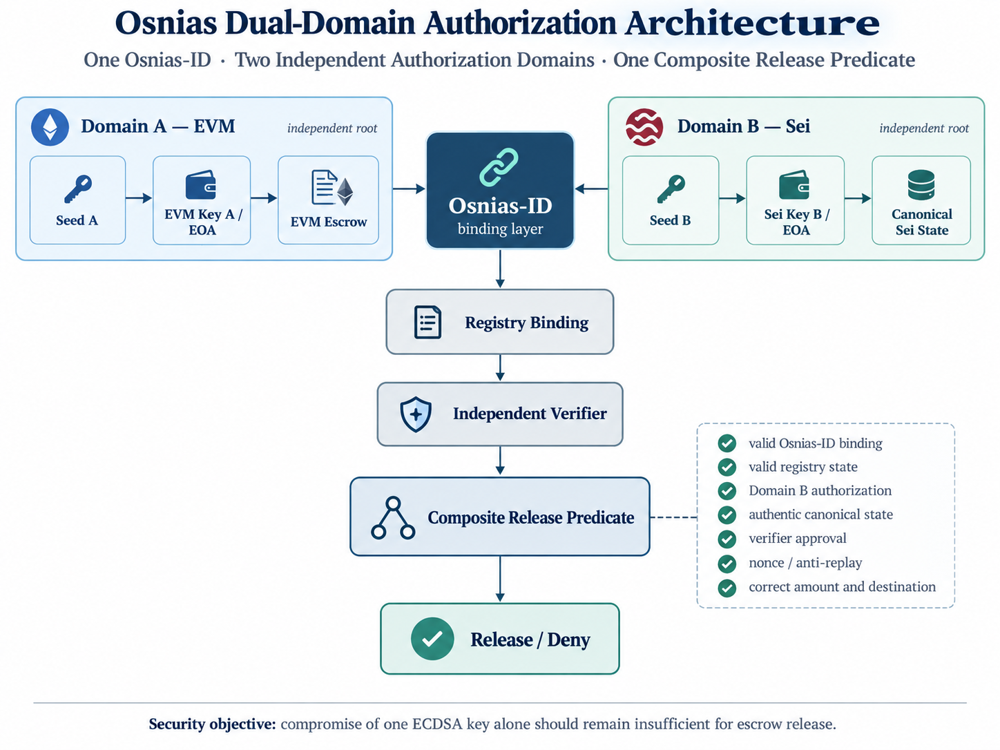
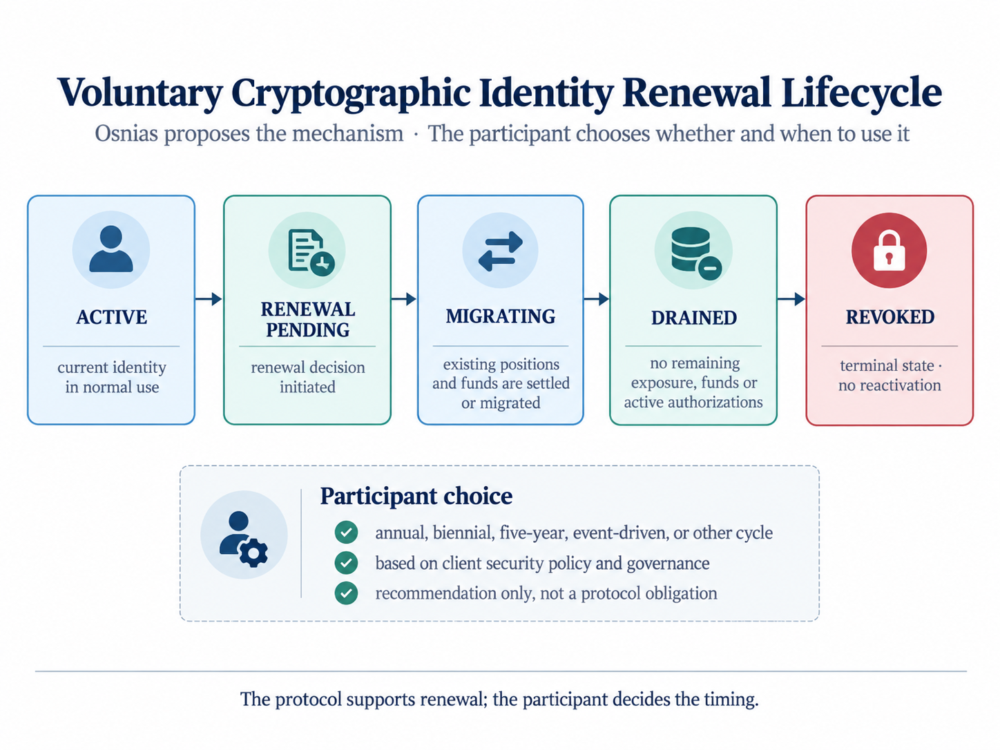
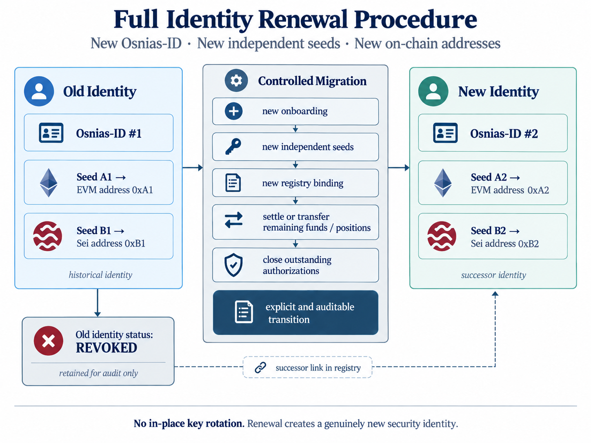

01 · Security Architecture
Separate the roles before defending them
Osnias-ID binds the participant lifecycle to distinct technical roles without collapsing them into one trust domain. The EVM signer may authorize protocol actions, but it is not allowed to choose an arbitrary release destination at release time.

Security claimRecovery of the operational EVM private key should remain insufficient, by itself, to satisfy the complete release predicate and redirect escrowed funds.
Bounded scopeOsnias does not claim to make ECDSA post-quantum. It changes the system architecture so that compromise of one classical key is less useful to an attacker.
02 · Publication & Research
Osnias Clearing Security Audit Readiness & Internal Technical Assessment
Technical Report · Audit Readiness
Release 1.0 · Published Technical Assessment
The paper defines the security architecture and its assumptions. Implementation, hard-attack testing, remediation and retesting will be documented separately in a future Security Validation and Implementation Report.
03 · Audit Status & Scope
Document level, evidence status and exclusions
This internal assessment reviews the intended security design and the audit readiness of Osnias Clearing Release 1.0. It distinguishes documented design requirements from implementation evidence and independent validation.
| Assessment object | Osnias Clearing end-user security architecture |
|---|---|
| Assessment type | Internal technical security assessment and audit-readiness review |
| Version reviewed | Release 1.0 |
| Scope | EVM operational signer, independent Sei authorization, cold release beneficiary, release predicate, replay protection, identity lifecycle, administrative controls and cross-chain verifier assumptions |
| Implementation evidence | PENDING Contract-level enforcement to be evidenced on testnet |
| Adversarial validation | PENDING Static analysis, attack campaign, remediation and retest planned |
| Independent audit | NOT YET PERFORMED No independent third-party audit or certification is claimed |
| Assessment owner | Denis Bouzon · Osnias Clearing |
| Assessment date | 21 September 2026 |
| Overall status | Design assessed — implementation validation pending |
Explicit exclusions. This assessment is not an independent smart-contract audit, formal verification, penetration-test report, custody audit, legal opinion, ISO certification, conformity assessment or production-security certification.
04 · Methodology & Reference Frameworks
Evidence-based, risk-based and control-oriented review
The assessment method reviews architecture, trust-domain separation, compromise scenarios, target invariants, lifecycle controls, administrative powers, cross-chain assumptions, residual risks and the evidence required before a control can be treated as verified.
Review method
Architecture & trust boundaries
Identify assets, authorities, independent key domains, verifier dependencies, common-mode failures and administrative bypass paths.
Control method
Requirement → evidence
Separate a documented design property from contract implementation, test evidence, remediation evidence and independent review.
Risk method
Open risks remain visible
Unresolved verifier, migration, custody, governance or implementation questions remain explicitly open rather than being treated as passed controls.
Control evidence vocabulary: DESIGN REQUIREMENT SPECIFIED IMPLEMENTATION PENDING TESTING PENDING OPEN. A future independent reviewer may add verified or independently reviewed states when evidence supports them.
Methodological and security references
- ISO 19011:2026 — Guidelines for auditing management systems; used as a methodological reference for audit principles, evidence, risk-based auditing and audit-process structure.
- ISO/IEC 27001:2022 — Information security management systems; used as a reference for information-security risk governance and control context.
- ISO/IEC 27002:2022 — Information security controls; used as a reference for security-control design, access, cryptography and operational controls.
- ISO/IEC 27005:2022 — Guidance on managing information security risks; used as a reference for risk identification, assessment and treatment.
- ISO/IEC 27034-1:2011 — Application security; used as a reference for integrating security into application design and lifecycle processes.
- NIST SP 800-218, SSDF v1.1 — Secure Software Development Framework; used as a reference for secure implementation, vulnerability reduction and remediation practices.
Reference-framework notice. These standards and frameworks are cited as methodological and security-design references only. Their citation does not imply ISO certification, conformity assessment, NIST endorsement, independent validation or compliance attestation of Osnias Clearing.
05 · Control Findings & Evidence Status
What is designed, what remains open, and what must be evidenced
| ID | Control / finding | Risk class | Current status | Evidence required |
|---|---|---|---|---|
| SEC-001 | Operational EVM signer must not select or substitute an arbitrary release beneficiary. | Critical control | DESIGN REQUIREMENT | Contract-level beneficiary binding and negative tests. |
| SEC-002 | Release authorization must be single-use and bound to identity, asset, amount, state, nonce and beneficiary. | High | SPECIFIED | Nonce/proof consumption tests, replay and substitution tests. |
| SEC-003 | Canonical Sei state, finality/reorg handling, verifier authority and verifier change procedure require implementation evidence. | High | OPEN | Verifier specification, deployment evidence, finality policy and failure-mode tests. |
| SEC-004 | No single operational, registry, verifier, upgrade or emergency authority should be able to bypass the composite release condition. | Critical control | DESIGN REQUIREMENT | Role matrix, privilege tests and upgrade/admin-path evidence. |
| SEC-005 | A/B/C key domains require independent seed material and common-mode isolation; participant custody remains external to Osnias. | High | SPECIFIED | Onboarding procedure and participant-side custody evidence where applicable. |
| SEC-006 | Identity migration and terminal revocation require enforcement testing under adversarial lifecycle conditions. | High | IMPLEMENTATION PENDING | Migration-state tests, successor-binding tests and revocation tests. |
| SEC-007 | Static analysis, adversarial testnet campaign, remediation and retest have not yet been completed for this design state. | High | TESTING PENDING | Slither output, attack cases, findings register, remediation commits and retest evidence. |
Severity terminology. “Critical control” identifies a security property whose absence could enable direct fund redirection or equivalent systemic compromise. High, Medium, Low and Informational classifications are used for risk prioritization; they do not represent independent audit ratings.
06 · Secure Onboarding
Three independent roots, three distinct security roles
A security-sensitive onboarding should establish independent seed material for the operational EVM signer, the Sei authorization domain and the cold EVM release destination. Shared derivation roots undermine the intended fault-domain separation.
Operational EVM
Seed A · Hardware wallet
Recommended profile: the operational EVM signer is generated and retained on a hardware wallet. It may sign EVM transactions when required, while private-key material remains isolated from the general-purpose host environment.
Daily Sei authorization
Seed B · Operational Sei wallet
Recommended profile: an independently generated wallet may be used for routine Sei-side authorization and canonical-state interactions. MetaMask may be used where appropriate, but the architecture does not depend on a specific wallet vendor. The wallet remains cryptographically separate from the EVM hardware-wallet seed and from the cold release seed.
Cold release destination
Seed C · Offline cold release wallet
Recommended profile: a third, independently generated seed is kept offline and unused for routine signing. Its address is registered only as the release beneficiary. Backup material should remain offline under the participant’s custody procedures, using an appropriate cold-storage method without requiring any particular paper-wallet scheme.
Recommended three-domain profile. A = hardware-wallet EVM signer; B = independent operational Sei wallet for routine authorization (for example MetaMask where appropriate); C = independently generated, offline and normally non-signing cold release wallet. This is a recommended security profile rather than a mandatory wallet-vendor requirement.
Participant custody responsibility. Seeds A, B and C, their private keys, recovery phrases, hardware devices and backup material remain under the end-user participant’s custody and operational responsibility. Osnias Clearing does not hold, escrow, back up, recover or control participant private keys or seed phrases. The participant remains responsible for its own key-generation environment, storage, recovery procedures, access controls and custody policy.
Onboarding invariant. Multiple addresses derived from one seed are not treated as independent security domains. Distinct seeds should also avoid a common compromised generation environment where practicable.
Common-mode isolation. Independent seed material should, where practicable, be generated and retained in independent security environments. Distinct seeds created on the same compromised device, session or recovery environment do not provide full common-mode isolation.
Domain B signing invariant. Independent authorization does not protect against malicious co-signing or blind signing. Sei-side authorization should bind human-readable intent, Osnias-ID, beneficiary, asset, amount, nonce and expiry so that the participant can verify what is being authorized.
07 · Secure Fund Release
Audit objective: arbitrary destination prevention
The design requires the release beneficiary to be pre-committed during onboarding or through an equivalently strong controlled process. The target control is that the normal release path cannot accept an arbitrary beneficiary supplied by the operational signer. Contract-level evidence is required before this control can be marked as verified.
release() → registeredColdBeneficiary
NOT release(arbitraryDestination)
NOT release(arbitraryDestination)
Binding
Exact beneficiary match
The release authorization binds Osnias-ID, escrow, asset, amount, nonce, source state and the pre-committed beneficiary.
Replay resistance
Single-use authorization
Consumed nonces or proof identifiers prevent replay, cross-contract substitution and repeated release.
Control plane
No unilateral rewrite
The operational signer, verifier or a single administrator must not be able to rewrite the cold beneficiary unilaterally.
Scope boundary. The escrow-security claim concerns successful delivery to the pre-committed cold beneficiary. Subsequent custody and movement of those funds remain under the participant’s own custody and security controls.
Target invariant. The target security property is that no single operational signer, verifier authority or administrative role can unilaterally modify the registered release beneficiary or bypass the second-domain release condition. Implementation and privilege-path tests must evidence this property.
08 · Long-Horizon Cryptographic Risk
Prospective quantum risk, not present-day alarmism
A future Shor-enabled attack against exposed ECDSA public keys is treated as a prospective cryptographic risk. Osnias does not assert that such a capability is operational today. The engineering principle is to reduce a plausible future attack surface now, using mechanisms already available on current chains.
Today
Current-chain implementation
EOAs, smart contracts, nonces, registries and authenticated cross-chain state are sufficient to implement the architecture without modifying EVM or Sei consensus primitives.
Long horizon
One move ahead
If an operational signer becomes recoverable in the future, compromise of that key should still not automatically imply control of the independent authorization domain or the pre-committed release destination.
Bounded claim. This is defence in depth, not a post-quantum signature scheme and not a claim of future regulatory compliance.
09 · Identity Renewal & Off-Boarding
Cryptographic identities have a lifecycle
Osnias provides a voluntary renewal mechanism; the participant decides whether and when to use it. Renewal creates a genuinely new identity rather than silently mutating the historical one.


Migration risk boundary. Migration is treated as a heightened-risk lifecycle state. A successor binding should not become effective until the migration authorization, registry version, destination commitments and remaining-position state have been verified. New exposure should be associated only with the successor identity once that transition is complete.
Terminal state. REVOKED is final. Historical bindings remain auditable but are not reactivated.
10 · Temporal Security & Dispute Containment
The clearing cycle adds time for detection and containment
The end-user security architecture does not replace Osnias Clearing’s existing temporal controls. A defined clearing cycle can create time to identify anomalies, isolate disputed value and avoid forcing machine-speed events into machine-speed economic finality.
Detect
Anomaly appears
Monitoring, participants or authorized infrastructure identify an abnormal or disputed operation.
Contain
Disputed value is isolated
Only the identified amount is placed into a controlled escrow state rather than allowing the dispute to propagate.
Resolve
Outcome remains external
Osnias provides containment and technical execution. It does not replace courts, arbitrators or other competent dispute-resolution mechanisms.
Reduced composability remains a security property. ORUSD and OEURO are clearing instruments, not unrestricted DeFi assets. Narrow execution paths reduce external dependency and attack surface.
11 · Institutional Hardening
No single online component should control the entire release path
Keys
Independent generation
Separate seeds, segregated HSM/custody domains where appropriate, independent backups and explicit common-mode failure analysis.
Control plane
Threshold governance
Registry, verifier, emergency and upgrade powers should use separated roles and multi-party control for sensitive structural actions.
Auditability
Observable state changes
Critical registry, oracle/verifier, upgrade and escrow events should be attributable, logged and reviewable.
Verifier trust boundary. The cross-chain verifier is an explicit security boundary. Production implementation must define how canonical Sei state is authenticated, what finality or reorg policy is accepted, how verifier authority is changed, and which quorum or proof mechanism is required before an EVM release can proceed.
Administrative target invariant. The target security property is that no single upgrade, registry, verifier or emergency authority can unilaterally alter the release predicate, rewrite the registered release beneficiary or disable the independent second-domain condition. This remains a design requirement until implementation evidence and adversarial privilege testing are available.
12 · Implementation & Security Validation Roadmap
Architecture first. Implementation next. Evidence after attack.
The publication defines the intended security design. It does not claim that the implementation has already demonstrated these properties. The next stage is implementation on the Osnias public testnet, followed by a dedicated adversarial campaign and a separate public validation report.
Architecture freeze
Testnet implementation
Static + adversarial testing
Remediation + retest
Security validation report
Static analysis
Slither
Privilege surfaces, externally callable state changes, dangerous calls, routing paths and implementation weaknesses.
Hard attack
Adversarial testnet campaign
Release redirection, beneficiary substitution, replay, stale state, registry divergence, verifier failure, Sei finality/reorg handling, migration-state abuse and control-plane attack scenarios.
Evidence
Separate public report
Contract versions, test conditions, findings, observed failures, remediation actions, retest results and residual risks.
No result is assumed in advance. Slither and testnet testing are validation layers, not substitutes for an independent security audit or production qualification.
13 · Important Notice
Overall internal assessment. The reviewed design establishes meaningful separation between operational signing, independent authorization and fund destination, and identifies explicit controls for release, lifecycle, verifier and administrative risk. These security properties remain conditional until contract implementation, cross-chain verification, administrative enforcement, adversarial testing and remediation are evidenced. No independent third-party audit or production-security certification is claimed.